5．巴比伦的代数
从载有数字表的文件中，可以获得巴比伦人的数系和数字运算方面的许多知识。还有一些文件与此不同，它们是处理代数与几何问题的。早期巴比伦代数的一个基本问题，是求出一个数，使它与它的倒数之和等于已给数。用现代的记号来说，即巴比伦人要求出这样的x与
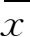
，使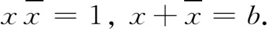
从这两个方程得出x的一个二次方程，即
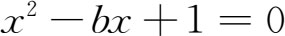
。他们作出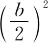
；再作出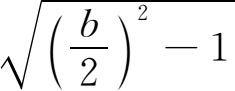
，然后得出解答：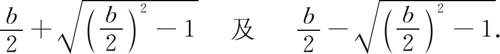
这就是说巴比伦人实际上知道二次方程根的公式。有些别的问题，如给定两数之和与两数之积而求出这两数，也可化为上述问题。由于巴比伦人不用负数，故二次方程的负根是略而不提的。虽然他们只给出具体例题，但好些问题是打算说明二次方程的一般解法的，他们用变量置换把更为复杂的代数问题化成较简单的问题。
巴比伦人能解出含五个未知量的五个方程这类个别的问题。在校正天文观测数据而引起的一个问题中，包括含十个未知量的十个（大多数是线性的）方程。他们用一种特殊的方法结合各个方程，最后算出了所有未知量。
他们的代数方程是用语文叙述并用语文来解出的。他们常用uś（长），sag（宽）和aša（面积）这些字来代表未知量，并不一定因为所求未知量确实是这些几何量，而可能是由于许多代数问题来自几何方面，因而用几何术语成了标准做法。我们举下面一个例子，来说明他们是怎样用这些术语表示未知量和陈述问题的：“我把长乘宽得面积10。我把长自乘得面积，我把长大于宽的量自乘，再把这个结果乘以9。这个面积等于长自乘所得的面积。问长和宽是多少？”很明显，这里的文字长、宽和面积，只不过是分别代表两个未知量及其乘积的方便说法(1)。
这问题现今的写法是
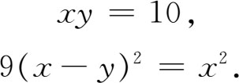
附带说明一下，求解时得出x的一个四次方程，但其中缺少x和x3项，因而可作为x2的二次方程来解出。
他们也解需要求三次根的问题。其中一个问题若用现今的记号来写是这样的：
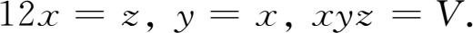
这里V是个给定的体积。求这里的x时必须算立方根。巴比伦人用上述的立方根数字表来算这个根。他们也计算复利问题，其中需要求出一个未知的指数函数值。
巴比伦人有时也用记号表示未知量，但这种记法只是偶尔用之。在有些问题里，他们用两个苏美尔文字（字尾变形有点受阿卡得文的影响）表示两个互为倒数的未知量。又因这两个文字在古苏美尔文里是用象形记号的，而这两个象形记号当时已不流行，所以结果就等于用两个特殊记号来表示未知量。他们反复运用这些记号，因而虽不懂得这两个记号在阿卡得文里的读法，我们也可以认出它们来。
他们解代数问题时只指出求解的步骤。例如，10平方得100，从1000减去100得900等。由于他们并不说明每步做法的理由，所以只能推想他们是怎么知道这种做法的。
他们在具体问题里算出了算术数列和几何数列之和。对于后者，用我们的记号是
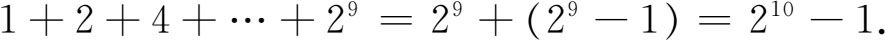
他们也给出了从1到10的整数平方和，好像是应用了下列公式似的：
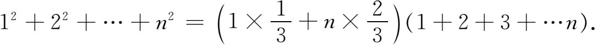
在处理这方面的特殊问题时，他们没有给出推导。
巴比伦代数中也含有一些数论。他们求出了好几批毕达哥拉斯三元数组，并且很可能是用正确方法得出的，即若
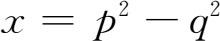
，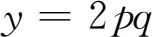
，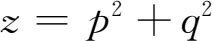
，则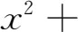
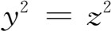
。他们还求出了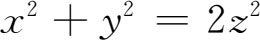
的整数解。